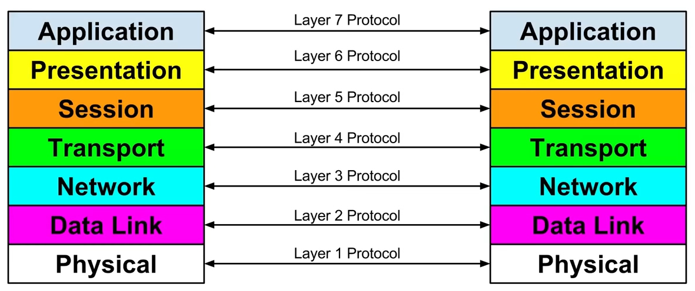

BytesOfProgress
Wiki
ISO/OSI Layer Model
The ISO/OSI (International Organization for Standardization/Open Systems Interconnection) layer model is a conceptual model used to understand how different parts of network communication systems interact with each other. It consists of seven layers, each with its own specific function.
This is what it looks like:
Here is an overview of each layer:
Layer 1 / Physical Layer
This is the lowest layer of the OSI model. It deals with the physical connection between devices and transmission of raw data bits over a physical medium such as wires, cables, or wireless signals. It defines specifications like voltage levels, cable types, and data rates.
Layer 2 / Data Link Layer
The data link layer provides reliable data transfer across the physical layer's link. It ensures error-free transmission of data frames between neighboring network nodes. This layer handles tasks such as framing, error detection, and flow control. Examples of protocols operating at this layer include Ethernet and Point-to-Point Protocol (PPP).
Layer 3 / Network Layer
The network layer is responsible for routing packets across multiple networks. It determines the optimal path for data to travel from the source to the destination based on network conditions, addressing, and routing protocols. IP (Internet Protocol) is a key protocol operating at this layer.
Layer 4 / Transport Layer
The transport layer ensures reliable and transparent data transfer between end systems. It establishes connections, breaks data into smaller segments for transmission, ensures sequencing and reordering of segments, and provides error detection and recovery. TCP (Transmission Control Protocol) and UDP (User Datagram Protocol) operate at this layer.
Layer 5 / Session Layer
The session layer establishes, manages, and terminates communication sessions between applications. It allows applications on different devices to establish connections, synchronize communication, and manage data exchange. It handles functions such as session establishment, maintenance, and termination.
Layer 6 / Presentation Layer
The presentation layer ensures that data exchanged between applications is in a format that the receiving application can understand. It handles data translation, encryption, compression, and formatting, making sure that data sent by one application can be understood by another application regardless of differences in data representation.
Layer 7 / Application Layer
The application layer provides an interface between the network and the application software. It enables communication between different applications and services, allowing users to access network resources. Protocols like HTTP (Hypertext Transfer Protocol), SMTP (Simple Mail Transfer Protocol), and FTP (File Transfer Protocol) operate at this layer.
Each layer of the OSI model serves as a building block, with each one contributing functionalities that collectively enable the smooth exchange of data between devices across a network. As information travels through these layers, it undergoes a series of transformations, encapsulations, and validations, ensuring that data integrity, reliability, and efficiency are maintained throughout the communication process. Through their coordinated efforts, the OSI layers established a standardized framework that enables operability, scalability, and robustness inside networked environments, enabling seamless communication and interaction between devices and applications.
back